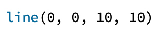

Processing makes it easy to create nice-looking visual output quickly, so we’re going to take advantage of that to write our very first basic Python programs. We’ll start off by using the line command to draw a line on the screen, like so:

The program above draws a rather small, diagonal line on the canvas that Processing automatically pops up every time you run a program. You have likely noticed that we included four numbers, separated by commas, inside the brackets next to the line command. Those numbers are to tell Processing where to draw the line on the canvas. The parameterization of commands illustrates a fundamental concept in computer science. The people who created Processing could have designed the line command such that it always drew the line in the exact same place, but that wouldn’t have been very useful. Instead, by specifying four numeric parameters for the command, the designers created a single command that allows programmers to draw a line anywhere they like (well, anywhere on Processing’s canvas).
To effectively use the line command, we need to know the meaning of those four numbers. In this case, it’s easy: the numbers specify the (x, y) coordinates of the endpoints of the line. In other words, in English, we would express the command above as “draw a line from coordinate (0,0) to coordinate (10, 10)”. The ordering of the numbers matters: Processing knows which number is which; thus, the first number is always the x coordinate of the first point, and so on.